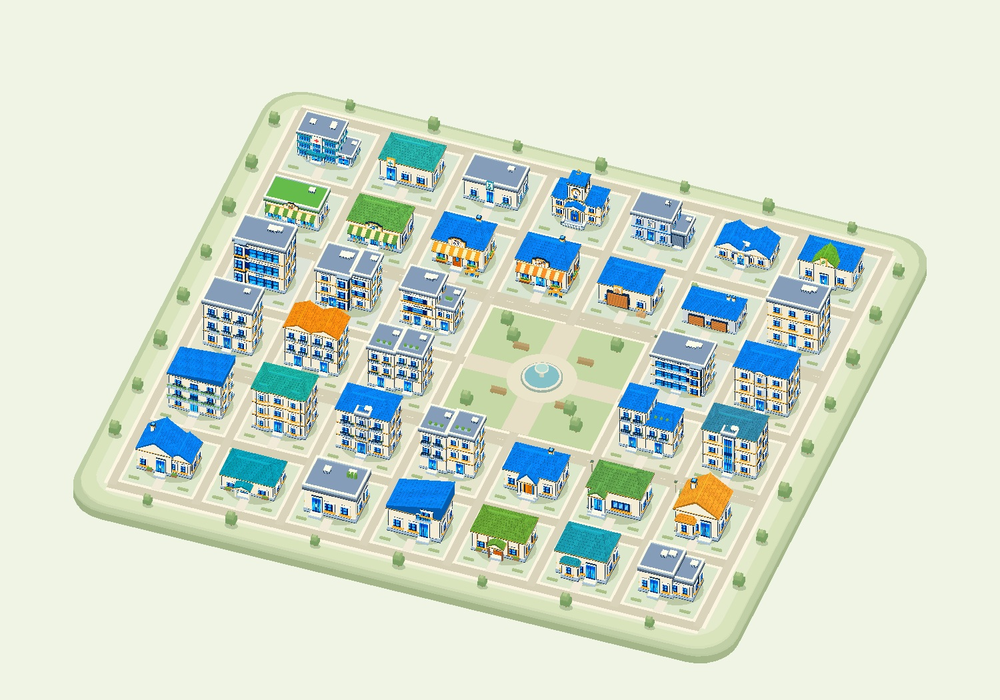

01 / INTERVENE
主动干预
ACT TO UNDERSTAND
选择可能区分不同学习机制的政策或观察行动，让每次交互同时创造新的信息。
理解学习中的他者，而不只是预测下一步。
走进由原素材立体重建的小镇，探索居民的七天生活。
从一次行动、一条反馈，理解学习中的他者。

拖动旋转 · Shift / 右键平移 · 滚轮或双指缩放 · 点击建筑探索
没有匹配的建筑，请调整搜索或分类。
直接体验项目原有的 civic-v1 Demo。
七天工程轨迹，完整保留互动回放。
选择一位居民跟随，或从一栋建筑开始探索。
按需载入原始回放与建筑素材
这是项目默认版本的预录工程回放，不是在网页内实时重新决策。健康着色与病程属于观察者视图；合成场景和工程功能不代表已验证的算法收益。
相同的行为，可能来自经验、风险感知，或对他人的模仿。改变观察条件，可能帮助我们区分这些机制。
调节演示模型中，不同学习机制对同一信号的响应差异。
先验对三种机制一视同仁。选择情境，开始一次推演。
保存沙盘当前显示的三个概率，再调整情境或信号区分度，比较两次判断。
这是使用预设假设的交互式说明，不是 EpiTown 的真实实验或实时仿真。三种机制的初始概率均为 1/3；每种情境预设一条反馈，以及它在不同机制下出现的可能性。
区分度为 0 时，三种机制对反馈的解释相同，信念不变。提高区分度会在本示例中放大机制差异；使用贝叶斯归一化计算更新后的信念。KL 表示后验与先验的差异，不是对实际干预效果的保证。真实环境的识别效果仍需实验验证。
b′(η) ∝ b(η) · P(反馈 | η, 干预)
H(b) = −Σ b(η) log₂ b(η)
每个人只看见世界的一部分。
信息沿层级汇聚，行动在街道发生。
主要依赖医生与公安的汇报理解城市，偶尔进入街道观察。通过政策干预，既改变城市，也了解居民如何学习。
改变系统的控制价值。
理解系统的信息价值。
选择可能区分不同学习机制的政策或观察行动，让每次交互同时创造新的信息。
结合层级汇报与局部观察，更新对隐含机制 η 的判断，保留尚未消除的不确定性。
利用识别结果评估长期影响，选择下一轮行动，形成干预、识别与决策的闭环。
改变信息发布或服务安排。
居民如何回应这一次变化。
把反馈带入机制判断。
在一致的观测条件和交互预算下，比较常规多智能体学习、被动识别与主动干预识别方法。从两街道 Demo 开始，再扩展居民规模。
从一个个体的改变，到一个系统的理解。